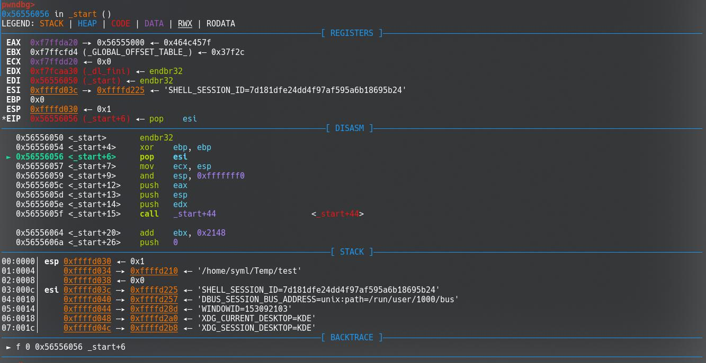
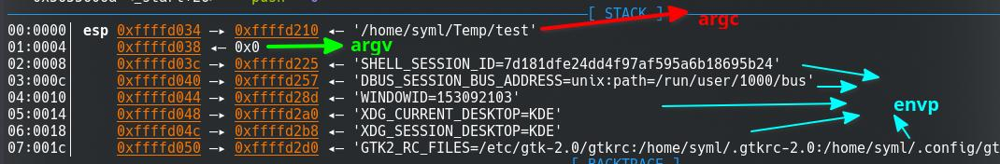
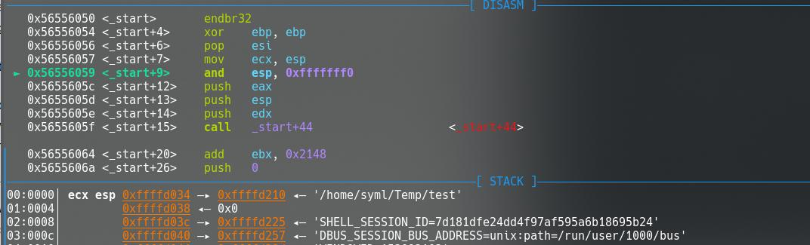
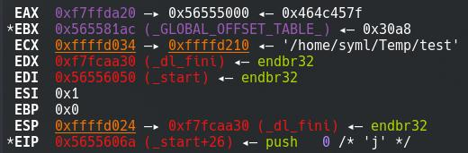
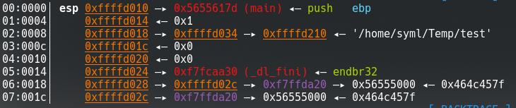
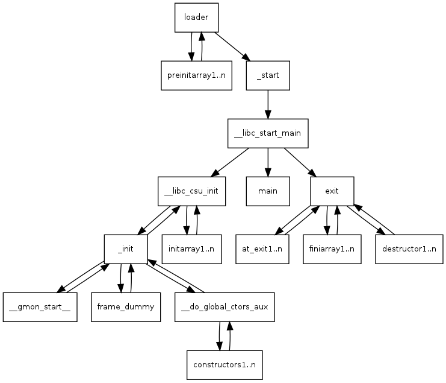

之前偶尔写一些逆向的时候总会看到IDA反汇编出来的函数列表里面有_start这样的奇奇怪怪的函数，在调试的时候main函数return之后也会到一些奇奇怪怪的地方去。感觉是应该去把这些东西给理一下了。
程序的启动和execve
我们在shell中执行一个程序的时候，Linux内核会去装载这个程序并且去执行。
按照以前所学的shell的实现，当在终端中输入了一条命令之后，shell会进行fork()调用创建一个新的进程，并在新的进程中执行这条命令。
1 | void run_command(char* command, char* args[], int args_cnt){ |
前面提到了execvp(const char* file, char* const argv[])，这个函数定义在unistd.h中。这个头文件中还定义了其他的一系列函数：
1 | int execl(const char *path, const char *arg, ...); |
应该说这些函数实际上都是通过调用execve来实现的。这些函数定义在glibc中，通过一个系统调用来实现。
glibc中的execve产生的系统调用会被Linux内核接收并处理，Linux内核会读取对应的文件并装载入内存进行执行。内核中对这个过程的实现包括了一系列的函数，在这里就不多说了。
入口点和_start
我们写一个简单的程序。
1 | int main(){ |
这仅仅是一个空的函数体，只能勉强称之为“程序”。编译之后，通过readelf读取文件头信息：
1 | ELF 头： |
可以看到程序的入口点是0x1050。我们通过objdump反汇编查看对应的入口点：
1 | 00001050 <_start>: |
和常识并不相符——程序的入口点实际上对应的是这个_start函数，而不是main函数。
如果用GDB进行调试，实际上程序在最开始会从_start跳转进入_dl_start函数进行操作，这个函数是glibc中的一个函数，Linux系统中在执行execve（实际上是do_execveat_common）时调用它，主要是用来进行动态链接。在程序执行结束之后，也有一个类似的函数用来解除动态链接。
最开始的endbr32（或者endbr64）指令的作用是用作跳转的目的地址，跳转的目的地址位置上的指令是endbr32说明这是这个跳转有效，这个指令此外并没有作用。
首先这里执行了xor ebp, ebp，将ebp的值置为0。接下来，pop esi指令将栈顶的数据弹出到esi中。

图片是在执行pop esi的上一步操作，此时esi的值是之前dl_start调用留下的，指向栈上的一个位置。而EBP的值已经被设置为了0x0。
在执行完pop esi之后，我们观察程序的栈：

先前在栈顶的位置上是argc（0x1），被弹出之后，现在剩下argv和envp。
mov ecx, esp将esp的值放入ecx中，也就是将ecx指向目前栈顶的位置，这个位置存放的实际上就是argv。

接下来的操作and esp, 0xfffffff0将esp的最低4位置为了0。这一步显然会让栈顶向上移动，但是移动的距离是不固定的，取决于执行这条命令之前栈顶的位置。这样操作的目的在于将栈顶和4字节对齐。
接下来的一段代码是这些：
1 | push eax |
在执行call _start+0x2c之前，程序的寄存器和栈分别是：
1 | EAX 0xf7ffda20 —▸ 0x56555000 ◂— 0x464c457f |
这一段代码接下来跳转到下面的部分：
1 | mov ebx, dword ptr [esp] |
第一条指令将栈顶的数据放入ebx中。经过上一步的call指令操作，栈顶现在的值为call的指令返回地址，也就是call的下一条指令所在的地方。
接下来执行ret，程序返回esp所指位置的值对应的地址，也就是call下一条指令的位置。（将栈顶的元素弹出到eip）
下面的指令是add ebx, 0x2148。
在执行之后，各个寄存器的值：

在这个时候，ebx指向了_GLOBAL_OFFSET_TABLE_。
接下来的指令序列分别是：
1 | push 0 |
执行完前面的push指令序列之后，栈上的情况是：

这里dword ptr [ebx - 8]指针实际对应的位置就是main函数的入口点。
查看__libc_start_main的定义：
1 | int __libc_start_main( |
我们可以将参数和栈上的数据进行对应：
| 参数 | 作用 | 栈上位置 | 值 |
|---|---|---|---|
int (*main)(int, char**, char**) |
程序的main函数 |
ESP |
0x5655617d (main) |
int argc |
参数argv的个数 |
ESP+4 |
0x1 |
char** ubp_av |
参数argv |
ESP+8 |
0xffffd034->0xffffd210 |
void (*init)(void) |
_libc_csu_init函数 |
ESP+C |
NULL(0) |
void (*fini)(void) |
_libc_csu_fini函数 |
ESP+10 |
NULL(0) |
void (*rtld_fini)(void) |
动态链接器的析构函数 | ESP+14 |
0xf7fcaa30(_dl_fini) |
void (*stack_end) |
栈指针 | ESP+18 |
原ESP值 |
下面执行调用，程序进入__libc_start_main中。注意这里跳转到的实际上是plt表中对应的表项，这是一个到内存中的索引。实际上还需要另外一次跳转。
__libc_start_main
当程序进入了glibc的代码部分之后，常规人类的思维就逐渐难以跟上了。
函数__libc_start_main实际在glibc下的源码csu/libc-start.c中，对应了函数：
1 | STATIC int LIBC_START_MAIN(int (*main)(int, char **, char **MAIN_AUXVEC_DECL), |
这里的具体内容暂且不说，里面做了包括了这样几件事情：
重定位，PIE
1 | _dl_relocate_static_pie(); |
canary
1 | /* Set up the pointer guard value. */ |
调用了init：
1 | /* Call the initializer of the program, if any. */ |
调用主函数，同时将参数传递进去：
1 | char **ev = &argv[argc + 1]; |
处理最终的结果：
1 | exit(result); |
__libc_csu_init
在许多情况下，init指向的是glibc的__libc_csu_init函数，这个函数定义在了csu/elf-init.c中。
1 | void |
去除掉其中暂时用不着的宏定义部分，这个函数做的是这些：
1 | _init(); |
这个函数实际上是整个程序的“构造函数”。首先它调用了函数_init()。
1 | /* These function symbols are provided for the .init/.fini section entry |
_init
这边并没有给出定义，只有一个简单的声明。我们对程序进行反汇编来看看_init()到底做了什么。
1 | 00001000 <_init>: |
get_pc_thunk这个函数是用来处理Global Offset Table（GOT表），这和地址无关代码有关。这个函数可以获取当前指令的位置，这样加上一个偏移就可以访问一些资源。
1 | 00001080 <__x86.get_pc_thunk.bx>: |
这里有趣的是，在执行调用语句call <__x86.get_pc_thunk.bx>的时候，栈顶被压入了下一条指令也就是add ebx,0x219f的地址。而这个时候mov ebx,DWORD PTR [esp]实际上放入ebx的也就是这条指令的地址。
接下来执行的add语句中0x219f就是当前代码相较于位置无关代码的偏移。接下来就是将对应地址中的数据读取到寄存器eax中，如果对应的地址有效那么便去执行其中的代码(gmon_start/frame_dummy之类的？)，否则继续也就是结束这个函数的执行。
我看有些教程里面提到了有函数
_do_global_ctors_aux，但是我没有在这里找到从_init开始的调用。头疼……
_do_global_ctors_aux
这个函数理论上使用来执行构造函数的，也就是“存放了全局C++对象的构造函数”。
不过麻烦的是程序编译了之后好像没有这个东西……
要是啥时候知道了再补上……
在执行了上面的部分之后（？），_init函数也就到了最后结尾，接下来程序返回到__libc_start_main中。
回到__libc_csu_init
接下来，我们执行到了这个代码段：
1 | const size_t size = __init_array_end - __init_array_start; |
这一段也就是在执行一系列的初始化函数：
1 | // test init |
程序执行的结果也就是这样的：
1 | # syml @ SYMLArch in ~/Temp 0 [18:57:21] |
在执行结束这一系列的初始化函数之后，__libc_csu_init函数结束。接下来程序返回到__libc_start_main中，并接着进入main函数，在执行完成之后，结果会返回给exit函数进行处理。
总结
最后那这张网上的图来说明一下整个流程，一个程序运行的流程也就是把这棵树先序遍历了一下：

总的来看整个流程至少是梳理了一遍……但是说实话不少地方还是有点痛苦的，比如说glibc的源码实在是太晦涩了，包括部分函数实际上是自动生成的，并没有对应的源码能够查阅。
这一篇写下来填了一些之前留下的坑，又留了更多的坑……
参考资料
[1] 程序员的自我修养——链接、装载与库
[2] http://dbp-consulting.com/tutorials/debugging/linuxProgramStartup.html
[3] 深入理解Linux内核
[4] glibc源码
[5] Linux源码